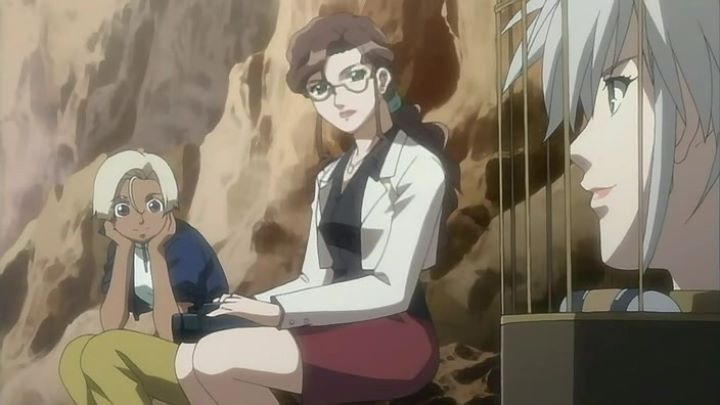

When I first started getting into anime, I remember 2006's "Coyote Ragtime Show" being on my list of things to watch. Losely inspired by shows like "Cowboy Bebop," it's a madcap, violent action-adventure set in space, with the central team (one of a few) on a race to find a lost treasure before it's too late. True to the era, one of the taglines of the show mentions "beauty and babes," putting it on one of the "girls-with-guns" anime lists. Generally, the show is fine, but forgettable, and a major issue with its premise holds it back.In a distant future where humans have colonized planets across space, the legendary space pirate Bruce has left a massive fortune upon his death, hidden on the planet called Graceland. Now a world of violence, Graceland is set for demolition in just one week. Step in Mister, the mysterious and legendary pirate, a tall, gruff leader that uses an array of aliases to stay out of harms way. The first episode shows him and his allies breaking out of a massive security prison to get to that treasure before it's too late. Aside from actually finding it, they also have to worry about detective Angelica, an older woman with an appetite that remains hot on his trail. Also, a gang of lolita gun-toting robotic assassins. That would be enough for a thrilling adventure (even if the assassin group is a bit much to swallow). But there's also Franca, Bruce's daughter, and the true heir to the treasure. Mister and his crew pick up the child, ultimately needing her, but also intending to give her the loot opposed to simply stealing it all. This slows and stalls the pacing of the story significantly. It's nice to have a motive and opportunity for the lead character to show a good side, but a ten-year-old girl is not what this type of show needed (having police and assassin girls that also barely look 16 is enough of a problem). It's not entirely Franca's fault: she's fully independent and able to hold her ground, but is treated as the sweet little girl in need of rescue for most of the story.While the first few episodes set up a cool premise with the right amount of suspense and mayhem, "Coyote Ragtime Show" also simply doesn't have enough style to stand out. That's hard to believe, with a rocking soundtrack and a charismatic pirate leading the adventure, but it's true, as the show eventually dissolves into generic spaceship shootouts. I had to go back and watch a few episodes to remember ANYTHING from it, wherein a decided it's not bad... but then began to forget about it the following day again. It's hard to pinpoint exactly what is at fault; generic visuals perhaps? I get the sense the writers and studio just wanted to make an adventure series in this genre (perhaps after seeing "Cowboy Bebop" and Disney's "Pirates of the Carribbean"), without much more inspiration than that to give it shape.  Speaking of visuals: the production was done by Ufotable. Yes, that Ufotable, the one that uses digital animation to add colors and lighting effects to create their unique style in properties like "The Garden of Sinners" and "Fate/Zero." Before "Sinners," the studio hadn't yet defined that workflow, and their output didn't look great before then. It's amazing, since "Coyote" came out only one year before "Sinners" did. Here, colors are flat, and character designs range from ok to poor. Animation shows moments of expression, but usually with noticable limitations in frame rate. The biggest standout of style is the ending credits: once one of Ufotable's trademarks, it's animated cheaply but sincerely with stop-motion figurines. The soundtrack is pretty good, using old swing and jazz to help define a style, but not varied or strong enough to be worth seeking out on its own. The English dub is good, but mostly unexceptional. "Coyote Ragtime Show" should have been one of the coolest anime this side of the solar system. If you have nothing else to watch, the adventure can be thrilling in the moment. But a lack of style (or in the case of the lolitta assassins, mismatched style) prevents it from being remotely exceptional. There are simply too many other, and better, examples of the genre to watch.
- "Ani" More reviews can be found at : https://2danicritic.github.io/ Previous review: review_Cowboy_Bebop_-_The_Movie Next review: review_Croisee_in_a_Foreign_Labyrinth